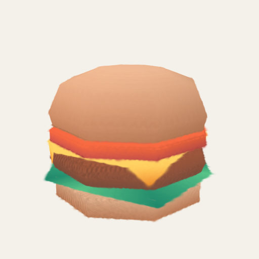
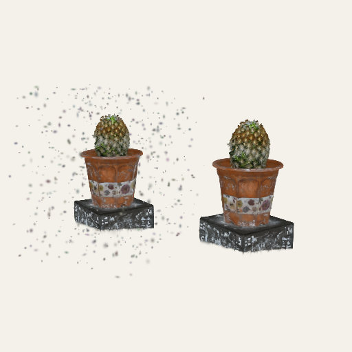

Definitions, derivations, notes, and long tables start folded.
Chapter 10Make your own
The last chapter of the ladder is a short one, because most of it is the earlier ones: you make your own toy by writing a recipe (Chapters 2 to 6), by typing an equation (Chapter 3), by turning something you already have into splats (Chapters 7 to 9), or by opening a file someone else made. This chapter gathers those ways in one place and says, for each, what it takes and what it cannot do. It ends with how to share what you made.
Five ways to make your own
| Way | What you give it | What you get | Where |
|---|---|---|---|
| Roll one | A shape, a palette, a seed | A made-up splat object, the same every time you use that seed | Make tab, always on |
| Type one | An equation for x, y, z, and a color | A surface of splats, and a link to share it | Splat equation (Chapter 3), labs |
| Open one |
A splat file (.ply, .sog, .splat,
.spz)
|
The splat as a toy that Poke, Paint, Magnet, and the effects work on | Make tab, always on |
| Turn something into one | A photo, a video, a 3D model, a table, a sound, a PDF, a molecule, a scan | Splats made on your device | The Studio, labs (below) |
| Write one | A recipe in JavaScript | A toy with parts, controls, and a tap of its own | The source code (Chapters 2 to 6) |
Roll one and open one
Roll one. The Make a toy section of the Make tab builds a splat object in your
browser from a few choices: a shape (sphere, noise blob, torus, capsule, or knot), a
palette, a seed, how many splats, how much the sizes jitter, how rough the surface is, and
how much color noise there is. The generator is seeded and pure
(src/generators.js), so the same seed and settings give the same toy, which is
why a link can rebuild it. Part of the splats fill the inside, so the slice effect has
something to show.
Open one. Your own splat opens a PLY, SOG, SPLAT, or SPZ file (SPZ versions 1 to 3). KSPLAT and version 4 SPZ files are refused with a message that says to convert them first. You can also drop a file anywhere on the page. The file stays on your device, and nothing is uploaded. Poke, Paint, Magnet, every effect, the motions, the flag and pattern colors, and the Detail setting all work on it. What cannot work is a toy's own action (a lid that opens: a captured file has no lid) and Clay. And a file cannot go in a share link, because it never leaves your device: a link carries settings, not files (Chapter 9). To share the result, export a picture (PNG), a GIF, or a video.
The Studio
What it is. The Studio is a shelf of tools that turn other things into splats, on your device. Each takes a file you open, does its work in a worker, and shows the result as the toy's splats. They are behind the labs switch. Nothing is uploaded, and the libraries a tool needs (a PDF reader, a depth model, a laz decoder) are loaded only when its toy opens.
| Toy | You open | It makes | Chapter |
|---|---|---|---|
| Photo to 3D | A photo | The photo at its depths, as a Sharp view or as splats | 8 |
| Moving photo to 3D | A GIF or a short video | The clip played back in 3D | 8 |
| Video to 3D | A video of a still scene | A trained splat scene and its camera path (WebGPU) | 8 |
| Model to splats | A glTF, GLB, OBJ with its MTL, or STL file | The surface as flat discs, colored from the model | 10 (below) |
| Splat toolkit | A splat file (or two, to compare) | The file's numbers, cropped, cleaned, shrunk, and saved in another format | 10 (below) |
| Point clouds | A LAS, LAZ, PLY, XYZ, or PTS file | The points as splats, colored by height, intensity, or class | 7 |
| Volume viewer | A DICOM, NIfTI, TIFF, or raw volume | A block of splats you can cut through | 7 |
| Data in 3D | A CSV or TSV table | A scatter, bars, or a surface with labeled axes | 7 |
| Molecule viewer | A PDB, mmCIF, SDF, or XYZ file | Balls and sticks, space-filling atoms, a cartoon, or a surface | 7 |
| QR code | A link, text, or other contents | A code that checks that it scans | 9 |
| Your book | A PDF | A book whose pages turn | 9 |
| Song landscape | A song | A 3D field made from its spectrogram | (sound toys) |

Model to splats

Splat toolkit
Models, and your splat files
Model to splats (src/packs/studio-models-core.js, which a Node tool
shares) reads a glTF 2.0 file (.gltf or .glb), an OBJ with its
MTL, or an STL file, and lays flat discs on the surface, more of them where there is detail,
each sized to its neighbors so the surface closes. It colors them from the model's
base-color texture, vertex colors, or material, and the budget is the tier's default times
1.5, capped at its maximum, as for a photo. What it does not read: glTF compressed with
Draco or meshopt, morph targets, skinning (a skinned mesh shows in its bind pose),
animations, lights, cameras, emissive colors, and any texture except the base color. Glass,
a material less than half opaque, is left out, because splats cannot be see-through solids.
The Splat toolkit opens a 3D Gaussian splat file and shows its numbers: how many
splats, how big, how opaque, and the degree of their view-dependent color. Then it works on
it: crop it with a box, remove floaters with a statistical filter you tune (the removed
splats show in red, or before and after side by side), shrink it to a share of its splats,
and compare it with a second file, turning in step. It saves in four formats: PLY
(everything is kept; every tool reads it), SPZ (about a tenth of the size; view-dependent
colors are kept), SOG (the smallest; base colors only), and .splat (simple;
base colors only). A file is saved to a place you choose.
A demo goes here later
A tiny splat file in the page, with a crop box and a floater filter you can move, and the counts changing as you do.
Writing a recipe
A recipe is a plain JavaScript object in a pack file under src/packs/, and the
keys it can have are the whole of this manual so far. Here they are in one place:
Show the table: what a recipe can ask for
| Key | What it is | Chapter |
|---|---|---|
build(k, o) |
Makes the splats from the kit's shapes, from the options o. |
2 |
drive(t, c, out, info) |
Every frame: moves parts, tokens, and levers; sets glow and sheets. | 2, 5 |
options, controls, action |
The choices saved in a link, the live sliders and pulses, and the tap. | 2 |
pictures, input, tiltLock |
What a visitor can open or type, and how a drag turns a flat toy. | 5 |
hands, handsOn, handsLevel1 |
Pieces, joints, ropes, materials, and the ✋ switch.
handsOn: false keeps a toy out of hands-on play;
handsOn: true starts the switch on; handsLevel1 lets a
picture or a still toy play as one rigid body.
|
6 |
alive, density, kernel,
turntable
|
The toy's own behaviors, how many splats it wants per base budget, the splat shape, and the idle spin. | 2, 5 |
credits |
The license and source notices that show beside the toy. | 10 |
There is no editor in the browser yet; "What comes later" explains the plan. Today a recipe
is a file in the project, and you can run your own copy of the site on your computer and
look at a recipe as you write it. Chapter 2's run it yourself section shows how, with
a prompt you can give to a coding assistant. A toy joins the shelf only after it has been
checked and read by a person. Its credits name the source, author, and license
of every asset it uses, and the site shows them beside the toy; an asset must carry a
license the site can use (never one that forbids changes, and never one that is unlicensed
or paid).
Sharing what you made
- A link: the Share tab copies a link that holds the whole scene. It works for everything except a file you opened (Chapter 9).
- A scene file: the same scene as a JSON file, which keeps paint and clay that a link is too short for. Old scenes (versions 2 and 3) keep opening.
- A picture, a GIF, or a video: PNG, GIF, and WebM exports of the view, and a live recording that starts when you tap Record and is saved only to a file you choose.
- A page of a document (labs): Save PDF (Chapter 9).
-
On a web page: the Share tab gives an iframe snippet and a
<splashery-toy>element, which takes asceneor atoy, atheme, abackground, anautoplay, aturntablesetting, azoom, and alabel. It starts when it scrolls into view and pauses when it leaves.
Every file you open stays on your device, and so does everything you make unless you choose to save it or share it.
Where to try it
- Splat equation, Model to splats, and Splat toolkit (all labs). The Make tab in the Playground is open to everyone.